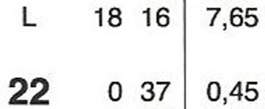
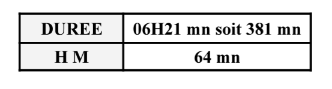
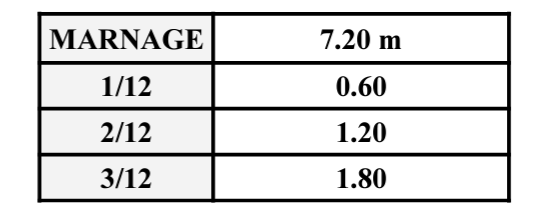

Méthode des douzièmes
0 - recueil des heures et hauteurs des étales de PM et basse mer
On repère dans l'annuaire les heures et hauteurs des PM et BM qui encadrent l'instant considéré.

Elles sont éventuellement corrigées du décalage horaire et de la surcote/décote due à la pression atmosphérique.
1 - Calcul de l'heure marée
On calcule la durée
\[durée = heure de BM - Heure de PM\]
Puis en divisant par 6, on obtient l'heure marée.

3 - Calcul des Douzièmes
On calcule le marnage
\[Marnage = hauteur de PM - hauteur de BM\]
Puis on en déduit les valeurs de 1/12 ; 2/12 ; 3/12 du marnage

4- Tableau de points
A partir d'une des étales, on dresse un tableau, heure marée par heure marée. Il est recommandé de partir de l'étale la plus proche de l'instant ou la hauteur recherchés.
5- Interpolation
On effectue ensuite une interpolation entre les deux lignes qui encadrent l'instant ou la hauteur considérés.
Dans cet exemple on cherchait la hauteur à 0h30 B